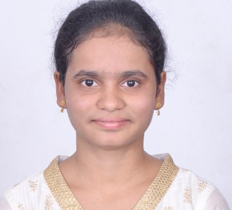

AWS Services
EC2, VPC, S3, EBS, EFS, IAM, Lambda, RDS, DynamoDB, Route 53, CloudFront
AWS CLOUD | DEVOPS | AUTOMATION
Cloud and DevOps professional with 4.8 years of total IT experience, including 3 years of relevant cloud experience. Experienced in AWS infrastructure, Terraform, Docker, Kubernetes, monitoring, and application deployment support.

AWS Cloud & DevOps Engineer
I am a Cloud Engineer and DevOps professional focused on AWS infrastructure provisioning, cloud networking, deployment support, monitoring, and troubleshooting. I have experience supporting application environments, Linux systems, infrastructure automation, and cloud operations.
Total IT Experience
Relevant Cloud Experience
Cloud Platform
Technologies and tools listed in my resume.
EC2, VPC, S3, EBS, EFS, IAM, Lambda, RDS, DynamoDB, Route 53, CloudFront
Terraform, AWS CloudFormation, Git, GitHub, CI/CD concepts, deployment automation
Docker, Dockerfiles, Kubernetes Pods, Deployments, Services, ConfigMaps, Secrets
Subnets, Route Tables, Internet Gateway, NAT Gateway, Security Groups, NACLs, IAM, KMS
CloudWatch, CloudTrail, metrics, alarms, log analysis, incident troubleshooting
Linux, Ubuntu, Amazon Linux, Bash scripting, AWS CLI, TCP/IP, DNS, HTTP/HTTPS
Work areas based on my resume. Add repository links and implementation details for projects you can demonstrate.
AWS compute, networking, storage, IAM, load balancing, scaling, and monitoring support.
Terraform-based infrastructure provisioning to support consistent configurations across cloud environments.
Support for Java and .NET deployments, containerized applications, CI/CD workflows, and infrastructure monitoring.
Computer Science and Engineering
MLR Institute of Technology | 2018
Feel free to contact me regarding AWS Cloud and DevOps opportunities.
Email: sajja.thulasi@gmail.com
Phone: +91 7013688645
LinkedIn: Add your LinkedIn profile URL
GitHub: Add your GitHub profile URL